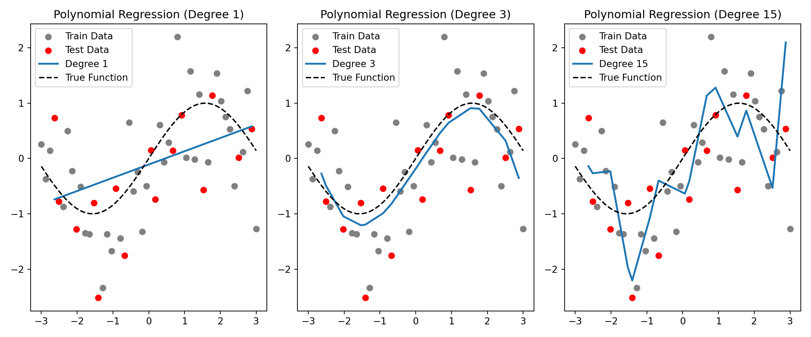

Code
import numpy as np
import matplotlib.pyplot as plt
from sklearn.preprocessing import PolynomialFeatures
from sklearn.linear_model import LinearRegression
from sklearn.neighbors import KNeighborsRegressor
from sklearn.model_selection import train_test_split
from sklearn.tree import DecisionTreeRegressor
# Generate synthetic data
np.random.seed(42)
X = np.linspace(-3, 3, 50).reshape(-1,1) # Feature is reshaped to create a 2D array with one column!
y = np.sin(X[:,0]) + np.random.normal(0, 0.8, X.shape[0]) # True function + noise. Note that X is a 2D array so we must pick one columns
# y = np.sin(X).ravel() + np.random.normal(0, 0.8, X.shape[0]) # Alternatively one can flatten the 2D array with ravel
# Train-test split
X_train, X_test, y_train, y_test = train_test_split(X, y, test_size=0.3, random_state=42)
plt.figure(figsize=(12, 5))
degrees = [1, 3,15] # Polynomial degrees
for i, d in enumerate(degrees, 1):
poly = PolynomialFeatures(degree=d)
X_poly = poly.fit_transform(X_train)
model = LinearRegression()
model.fit(X_poly, y_train)
X_test_poly = poly.transform(X_test)
y_pred = model.predict(X_test_poly)
plt.subplot(1, 3, i)
plt.scatter(X_train, y_train, color='gray', label='Train Data')
plt.scatter(X_test, y_test, color='red', label='Test Data')
plt.plot(np.sort(X_test.ravel()), y_pred[np.argsort(X_test.ravel())], label=f'Degree {d}', lw=2)
plt.plot(X, np.sin(X), label='True Function', linestyle='dashed', color='black')
plt.title(f'Polynomial Regression (Degree {d})')
plt.legend()
plt.tight_layout()
plt.show()